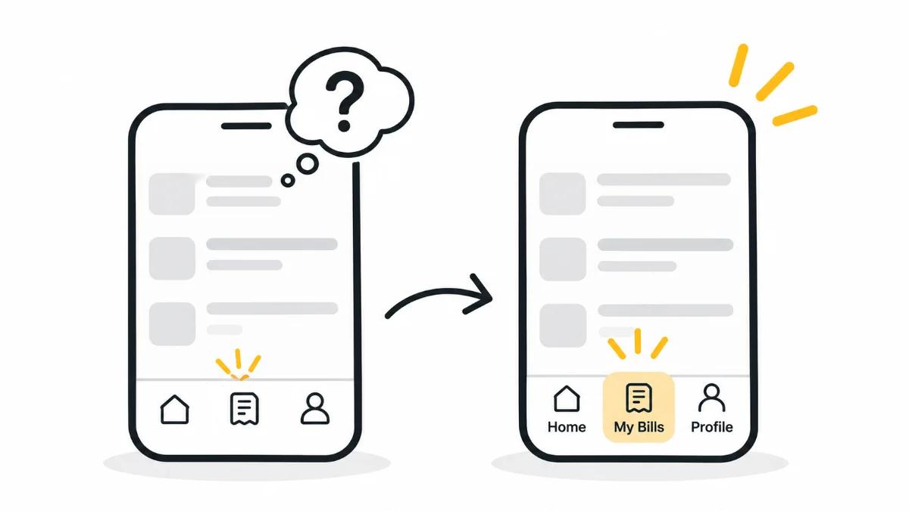

HeuristicsH6Recognition Rather Than Recall
You don't forget. You just need the right cue
Memory isn't lost, it's waiting to be activated. The moment you saw the photo, everything came back. That's the difference between recognition and recall. And it's exactly how interfaces should work.

A School Memory I Couldn't Recall (Until I Saw Her Face)
Recently, I met a very old friend of mine after years. As we caught up, she mentioned another schoolmate, someone she had reconnected with recently.
She said:
"You remember her, right? She was in all the debates, came from the next town over..."
But honestly? I couldn't recall her at all.
Then she opened a social media app and showed me a photo.
Boom. It all came back.
Her face was almost the same, and just like that, all those school-time memories came flooding back.
This is a perfect real-life example of the difference between recognition and recall.
In psychology, memories are often understood as being connected through different associations. Sometimes, we may not be able to retrieve a memory on our own, but the right cue can help us access it.
When I saw her face, it triggered those connections, and I was able to recognise her and retrieve those memories almost instantly.
That's the power of recognition.
It's not always that we've completely forgotten something. Sometimes, we just need the right cue.
UX Example 1: Icon Without Labels: A Guessing Game?
Imagine a bill payment app where the footer has a button with just a generic bill icon.
What does it do?
- Does it show upcoming bills?
- Does it show payment history?
- Is it an option to add a new bill?
The user has to figure out what the icon means. And if they're new to the app, they may not understand it easily.
Now, add a simple label:
My Bills or Bill History
Suddenly, things become much clearer.
There's no guesswork. The user doesn't have to remember what the icon means.
They just see → understand → act.
That's recognition rather than recall.
UX Example 2: Product Filters with Past Selections
In e-commerce apps, users often apply filters such as brand, price, or rating.
Imagine an app that makes this experience a little smarter:
- Saves your previous filter settings.
- Shows recently used filters visually.
- Highlights the options you selected last time.
Now, when you return to the app, you might think:
"Oh yes, I filtered for running sneakers under ₹4,000 last time."
You don't have to recall everything from scratch. The system gives you a reminder.
On the other hand, apps that don't retain or show your previous selections may force you to go through the entire process again.
It's a small inconvenience, but it's also a friction point we often don't even notice.
Why This Matters in UX
Human working memory is limited. And digital interfaces shouldn't test it.
This is why:
- Multiple-choice options are often easier than asking users to type everything from memory.
- Icons with labels are easier to understand than standalone icons.
- Recently used items can be more helpful than showing users a blank screen.
Your design should help users recognise what they need, rather than making them prove how much they can remember.
Key Takeaways
- Recognition = Less Effort. Recall = More Mental Load.
- Help users through visible cues, labels, previews, and history.
- Don't make people remember things your system can easily display.
- Make navigation, actions, and options visually clear and familiar.
Concluding Thought
Design is not a memory test.
Your user is already juggling enough. Don't make them dig into their mental archive just to use your product.
Recognise their context, their past behaviour, and their expectations.
When users can see what they need, they don't have to think too hard.
Make it visible.
Make it obvious.
Make it easy to recognise.
What's Next?
Nielsen's Heuristics as I See Them, Week 7: Flexibility and Efficiency of Use
Next week, we'll explore how designs can adapt to both beginners and power users, making every action faster and smoother.
See you next week.